Jurnal Eropa · Hari 10 dari 16
Botol kosong,
lalu gunung suci
Pagi terakhir di Salzburg dimulai dengan urusan yang kelihatannya sepele — mengembalikan dua botol plastik kosong. Lalu menyeberang kembali ke Jerman, naik ke bukit yang orang Bavaria sebut Gunung Suci, dan ditutup dengan satu pemberitahuan menjelang tidur yang membatalkan seluruh rencana besok pagi.
Dua botol kemarin, potongan hari ini
Cara kerja pfand, dan kenapa itu bukan sekadar daur ulang
Kemarin, entah di mana, dibeli dua botol Coca-Cola. Botolnya sudah kosong sejak semalam, dan pagi ini dibawa turun ke supermarket di lantai dasar penginapan — supermarket yang sama tempat kami belanja sarapan kemarin pagi.
Di dekat pintu masuknya ada mesin besar berbingkai kuning bertuliskan LEERGUT RÜCKGABE — pengembalian wadah kosong. Cara pakainya sederhana sampai terasa aneh kalau baru pertama: masukkan botol ke lubang bundar, satu per satu, mendatar. Mesin menariknya masuk, memindai kode batangnya, dan menghitung.

Selesai, tekan tombol, dan keluar secarik kertas: voucher senilai €0,50 untuk dua botol. Itu €0,25 per botol — dan angka itu bukan hadiah, melainkan uang kami sendiri yang kembali.
Inilah bagian yang sering tidak disadari pendatang. Di Austria, sejak awal 2025, setiap botol plastik sekali pakai dan kaleng minuman dikenai pfand — uang jaminan €0,25 yang sudah termasuk di harga waktu kamu membelinya. Jadi kalau kamu beli sebotol cola lalu membuang botolnya ke tempat sampah, kamu bukan sedang membuang sampah — kamu sedang membuang dua puluh lima sen.

Di badan mesin ada daftar tertempel berjudul LEERGEBINDE PFAND, dan isinya menunjukkan bahwa sebenarnya ada dua sistem yang jalan bersamaan. Sebagian besar daftarnya justru untuk wadah pakai ulang, dan tiap jenis punya tarifnya sendiri: botol bir €0,20, botol bir bertutup kait €0,36, botol air Vöslauer dan Römerquelle €0,29 — dan petinya sendiri, kosong, bernilai €3. Di bawahnya ada baris untuk gelas yogurt dan botol susu kaca. Baru di paling bawah muncul kelompok terakhir: Flasche, Dose — botol dan kaleng sekali pakai, yang tadi kami tukar.
Botol kaca di Eropa memang tidak dihancurkan lalu dilebur. Dia dicuci, diisi ulang, dan dipakai lagi berpuluh kali. Daftar di mesin itu, kalau dibaca pelan-pelan, sebenarnya daftar harga sebuah sistem logistik yang sudah berjalan jauh sebelum kata "ramah lingkungan" jadi bahan pemasaran.
Struk yang ada baris minusnya
Sarapan pagi ini, dibayar sebagian oleh botol kemarin
Belanjanya sederhana: pisang organik, dua croissant — satu isi nougat, satu butter croissant biasa — dan sebatang cokelat Ritter Sport Haselnuss. Semuanya dipindai sendiri di kasir mandiri, dan vouchernya dimasukkan ke celah yang sama seperti uang kertas.

Dan struknya jadi bacaan yang menyenangkan, karena ada satu baris yang bertanda minus:

Buat yang bepergian dan berhemat, ini kebiasaan kecil yang layak dibawa: simpan botol kosongnya. Kumpulkan di kamar, bawa waktu belanja, tukar di mesin. Untuk satu-dua botol nilainya memang kecil. Tapi untuk perjalanan enam belas hari berempat, yang minum air botolan setiap hari, angkanya jadi lain.
Kembali ke Jerman
Delapan hari kemudian, lewat pintu yang lain
Jam setengah sebelas, mobil menyeberangi perbatasan. Dan seperti perbatasan Ceko–Austria lima hari lalu, tidak ada apa-apa: tidak ada portal, tidak ada antre, tidak ada paspor yang diperiksa. Cuma papan biru berlingkar bintang emas bertuliskan Bundesrepublik Deutschland, ditemani lambang singa biru-putih Bayern di bawahnya.
Yang berubah cuma aturannya. Papan LED besar di atas jalan langsung menetapkan 80 km/jam, dan deretan truk mengantre di bahu jalan di sisi kanan.

Berhenti di Chiemsee
Danau yang orang Bavaria panggil "laut"
Sekitar satu jam kemudian, mobil keluar tol untuk meluruskan kaki. Tempat berhentinya kebetulan bagus: Chiemsee, danau terbesar di Bavaria — begitu luas sampai penduduk setempat menjulukinya Bayerisches Meer, Laut Bavaria.
Dari tepinya, sisi seberang cuma garis biru tipis, dan pegunungan Alpen berdiri jauh di belakangnya. Tepinya bukan pasir tapi batu kerikil, airnya jernih dan dingin, dan hari itu cerah dengan awan besar yang bergerak pelan.


Berhenti dua puluh menit, tidak ada agenda, tidak ada tiket. Ini bagian dari perjalanan mobil yang tidak bisa ditiru bus rombongan.
Di dekat tempat parkirnya ada bangunan kayu gelap berhuruf emas besar: CHIEMSEE, dengan deretan bendera negara berjajar di atapnya — pusat informasi sekaligus toko, tempat orang membeli tiket kapal ke pulau-pulau di tengah danau.


Kanan: papan informasi di tempat istirahat, berisi peta ADAC kawasan München–Salzburg–Passau plus nomor darurat kalau mobil mogok. Di jaman ponsel, papan ini terasa antik — sampai sinyal hilang.

Andechs, atas usul Justin
Belokan yang tidak ada di rencana
Tujuan hari ini sebenarnya cuma München. Tapi di tengah jalan Justin mengusulkan satu belokan: naik ke Andechs, sebuah biara di atas bukit di sebelah barat daya kota.
Ini bukan usul pertamanya yang mengubah hari — di Praha dulu dia yang mengusulkan masak sendiri di apartemen, dan itu berakhir jadi salah satu makan malam paling diingat. Jadi usulnya diterima tanpa banyak tanya.


Kanan: penghuni tempat parkir yang paling menarik perhatian — trike roda tiga penuh krom, dengan ban belakang selebar mobil.
Di gerbang masuknya ada papan besar bergambar peta lukisan tangan, dan judulnya menjelaskan kenapa tempat ini terasa berbeda dari biara biasa:
Selamat datang di Gunung Suci
Andechs adalah biara Benediktin yang berdiri di atas bukit menghadap Ammersee, dan sudah berabad-abad jadi tujuan ziarah. Tapi yang membuat namanya dikenal jauh melampaui kalangan peziarah adalah hal lain yang juga tertera di peta itu: Klosterbrauerei — pabrik bir biara.
Daftar nomor di papan itu membacanya seperti daftar sebuah desa kecil yang lengkap: gereja ziarah, kandang kuda lama, toko biara, tukang daging biara, taman bir, Bräustüberl dan terasnya, apotek lama, taman rempah, jalan salib, kapel rekonsiliasi, tempat bermain anak, sampai jalur pendakian ke lembah Kiental. Satu bukit, satu biara, dan seluruh kebutuhan hidup di sekelilingnya.

Di jalan naiknya, di bawah barisan pohon linden tua, berdiri bangunan kecil berplester krem dengan relung berjeruji dan angka Romawi XIV di puncaknya. Di dalamnya relief berlapis emas.
Ini perhentian keempat belas — dan yang terakhir — dari sebuah Kreuzweg, jalan salib. Rangkaian seperti ini dipasang di jalan menuju gereja ziarah supaya peziarah bisa berhenti dan berdoa di tiap perhentian sambil mendaki. Jadi jalur yang kami naiki sambil mencari tempat parkir itu, sebenarnya rute doa berumur ratusan tahun.


Kanan: papan sejarah di sebelahnya. Foto hitam-putihnya bukan kapel itu, melainkan Ökonomiehof — bangunan pertanian biara yang dulu berdiri di seberang kedai. Teksnya menelusuri jejaknya sampai sebuah piagam tahun 1157–73 yang menyebut Perhtoldus comes — bangsawan Berthold — menyerahkan tanah warisannya kepada Biara Benediktbeuern, dan sebagai gantinya menerima seumur hidup lahan milik biara itu di Erlingin, yang disebut “bersebelahan dengan bentengnya, Burg Anedehs”. Menarik: waktu piagam itu ditulis, biara Andechs belum ada. Nama Andechs muncul lebih dulu sebagai nama benteng — dan Erlingin itu Erling, desa di kaki bukit tempat kami memarkir mobil siang ini.
Antre daging di kios biara
Bräustüberl Andechs — bukan restoran, dan itu justru intinya
Bangunan tempat makannya sendiri sudah tua. Di dinding pelananya, ditulis tangan dengan angka gaya lama, ada dua tahun bertumpuk: 1573 dan 1669 — kemungkinan besar tahun dibangun dan tahun dibangun ulang. Di bawahnya, tembok batu dan bata merah yang plesterannya sengaja dibiarkan mengelupas.

Masuk ke dalam, dan yang menyambut bukan pramusaji tapi antrean. Ini Bräustüberl — kedai biara — dan cara kerjanya swalayan sepenuhnya: ambil nampan, antre di konter daging, tunjuk yang kamu mau, tunggu dipotong dan ditimbang di depanmu, bayar di kasir ujung, lalu bawa sendiri nampanmu cari meja.

Papan menunya digantung di atas konter, dua bahasa, dan yang bikin beda: dagingnya dijual per 100 gram, bukan per porsi.

Di balik kaca, meja potongnya penuh kaki babi panggang berjejer, kulitnya menggelembung dan mengilap. Seorang tukang potong berbaju putih berdiri di belakangnya dengan pisau dan garpu besar. Di kaca depannya tertempel peringatan merah: Vorsicht heiß — awas panas. Di sebelahnya, tegakan berisi puluhan pisau steak, siap ambil sendiri.

Struk yang semua angkanya cocok
Kebalikan dari struk tadi pagi
Pagi ini saya menyerah membaca tiga harga di struk supermarket karena jumlahnya tidak menutup. Siang ini kebalikannya: setiap baris di struk Andechs bisa dihitung ulang, dan semuanya klop. Layar kasirnya bahkan menghadap ke pembeli, jadi angkanya kelihatan sebelum dibayar.

Satu detail pajaknya menarik. Struk ini kena MwSt 7% — tarif rendah Jerman untuk penjualan makanan. Layanan restoran penuh, yang ada pramusaji dan pelayanan meja, masuk tarif 19%. Karena di sini kamu mengantre sendiri, membawa nampan sendiri, dan mencari meja sendiri, transaksinya dihitung sebagai menjual makanan, bukan melayani.
Jadi antrean tadi bukan cuma tradisi. Antrean itu bagian dari harganya.

Babi, dan bir yang dibuat biara
Bagian yang tidak perlu banyak dijelaskan
Yang datang ke meja: sepotong Schweinshaxn utuh dengan tulang menonjol dan kulit yang menggelembung jadi kerak cokelat keemasan, ditemani Kartoffelsalat kuning yang hangat dan agak berkuah — bukan salad kentang bermayones seperti yang biasa dikenal, tapi versi Bavaria yang disiram kaldu dan cuka.


Kiri: Haxe, kaki. Kanan: Wammerl, samcan — dipotong melintang sehingga lapisan daging dan lemaknya kelihatan bertingkat.
Ada juga sepiring sosis untuk yang tidak mau seberat itu: Weißwurst putih keabu-abuan berbintik peterseli, dan sebatang sosis merah oranye tipis di sebelahnya.


Kanan: tatakan gelasnya bertulisan Ein Genuß für Leib & Seele — kenikmatan untuk badan dan jiwa. Biara yang tahu cara memasarkan diri.
Dan birnya. Kloster Andechs punya pabrik bir sendiri, dan yang keluar dari kerannya bukan bir lisensi tapi bir yang dibuat di bukit ini juga. Di gelasnya ada lambang biara dan angka SEIT 1455 — tahun para Benediktin mulai menempati Gunung Suci ini.


Batu seorang santa di tepi jalan
Sejarah bukit ini, dibaca sambil berdiri di rumputnya
Selesai makan, jalan kaki memutari kompleksnya. Halaman dalamnya berdinding putih bersih dengan kotak bunga merah muda di tiap jendela, lantainya batu bulat, dan di sudutnya ada pancuran air minum umum — botol diisi ulang gratis di situ.


Di tepi jalan setapak itu, hampir terlewat, ada lempeng batu berbaring miring di dinding. Ada relief seorang perempuan memegang tongkat gembala dan sebuah gereja kecil di tangannya — lambang pendiri. Di bawahnya, huruf pahat besar-besar:

Dan beberapa langkah dari situ, berdiri papan besar berjudul Die Andechser Burg yang akhirnya menjelaskan semuanya — termasuk kenapa peta di gerbang tadi menyebut tempat ini Heiliger Berg, dan kenapa piagam tua yang kami baca di jalan naik menyebut benteng, bukan biara.
Papan itu juga memuat satu kalimat yang membuat batu Hedwig tadi masuk akal. Anak-anak Berthold IV, katanya, membawa keluarga ini ke puncaknya: Ekbert jadi uskup dan pembangun Katedral Bamberg; Berthold jadi Patriark Aquileia; Agnes jadi Ratu Prancis; Gertrud jadi Ratu Hungaria dan ibu dari Santa Elisabeth; dan Hedwig jadi Adipati Silesia — lalu santa pelindung negeri itu.
Jadi lempeng batu di tepi jalan setapak tadi bukan hiasan. Itu penanda bahwa seorang santa pelindung Silesia lahir di bukit ini, tujuh puluh tahun sebelum bentengnya dihancurkan, dan hampir tiga ratus tahun sebelum ada biarawan Benediktin yang menyeduh bir di sini.
Nama Heiliger Berg sendiri, kata papan itu, diberikan atas perintah Adipati Ernst (bertakhta 1392–1438) — karena banyaknya relik yang disimpan di sini, dan sebagai rujukan pada Gunung Sion dan Yerusalem surgawi.

Masuk ke gerejanya
Dan menemukan bahwa ini bukan monumen
Jalan setapak itu berakhir di pintu gereja. Serambinya saja sudah memberi tahu apa yang menunggu: langit-langitnya melengkung dan dilukis penuh — karangan bunga merah muda, sulur hijau, bingkai emas tipis, bidang putih di antaranya. Pintunya kayu gelap berukir dalam, engselnya besi tempa.
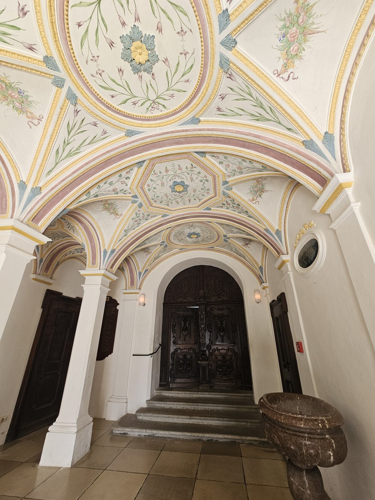
Tapi yang paling menarik di serambi itu justru bukan lukisannya. Di dinding tergantung bingkai kaca berisi dua lembar kertas, biru dan hijau, dicetak biasa saja. Bukan penjelasan sejarah, bukan daftar harga tiket. Itu jadwal misa.
Dan di antara tanggal-tanggalnya ada baris seperti Wallfahrtsmesse Bernried dan Messe Pfarrei Markt Indersdorf — misa ziarah yang dipesan oleh paroki dari kota lain, yang datang beramai-ramai ke bukit ini pada tanggal yang sudah mereka booking.
Jadi ziarah yang di papan tadi diberi tanggal 1128 itu bukan catatan kaki sejarah. Dia masih jalan, masih dijadwalkan, masih dicetak di kertas warna dan diganti tiap bulan. Sembilan ratus tahun, dan kalendernya belum kosong.
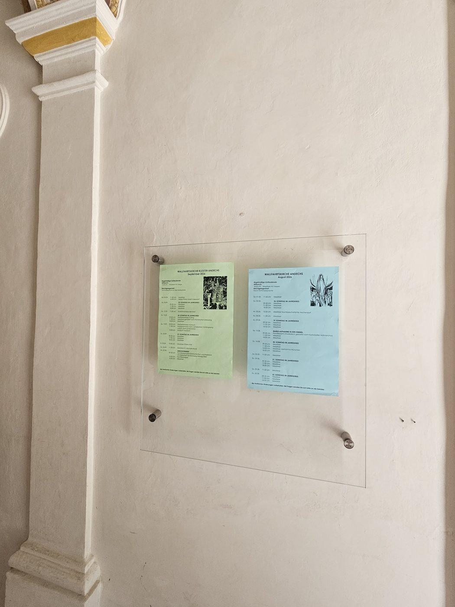
Dibangun 1400, tapi tidak ada yang gotik
Bangunan yang dirombak, dan tidak menyembunyikannya
Papan di luar tadi bilang gerejanya dibangun sekitar tahun 1400. Tapi begitu masuk, tidak ada satu pun yang terlihat gotik.
Yang ada: dinding putih bersih, dan di atas tiap tepi dan lengkungannya, stuko emas yang meliuk seperti sulur yang tidak mau berhenti tumbuh. Langit-langitnya diisi lukisan berwarna pastel — merah muda pudar, biru langit, cokelat susu — dan bingkainya bukan persegi tapi bentuk kerang emas yang sengaja dibuat tidak simetris. Lukisan-lukisan lonjong bergantung di dinding, dipegangi malaikat kecil dari plester putih.
Ini rokoko, dan umurnya kira-kira pertengahan 1700-an — tiga ratus tahun lebih muda dari tembok yang menopangnya. Jadi gereja ini rangkanya abad ke-15, tapi seluruh pakaiannya abad ke-18. Bangunan tua di Eropa memang jarang punya satu wajah, sama seperti angka 1573 dan 1669 di dinding tempat makan tadi.
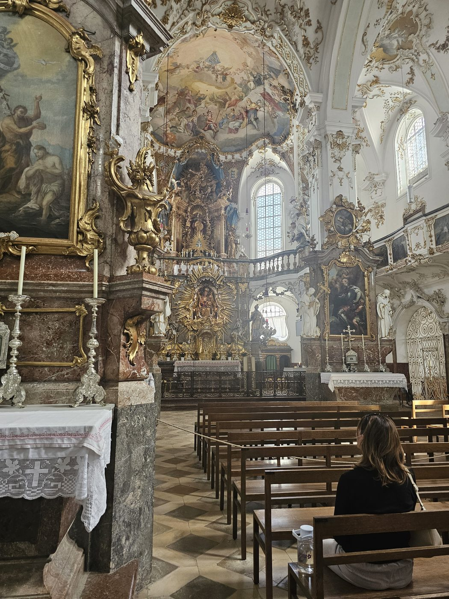
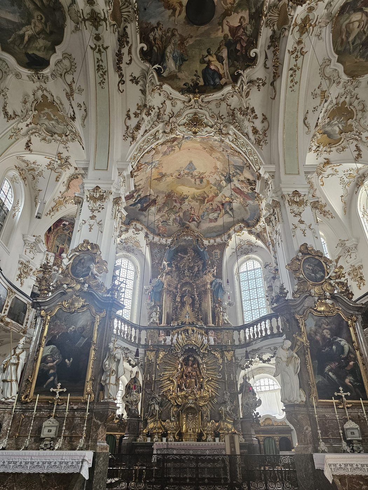
Tidak ada bidang yang dibiarkan kosong. Rokoko memang begitu — dan di sini pun dikerjakan sampai ke pojok-pojoknya.
Di ujungnya, altar utama: sebuah patung Maria bermahkota menggendong Yesus kecil, berdiri di tengah ledakan sinar emas, dikelilingi malaikat perak. Di atasnya patung-patung berjubah biru, dan di sudut langit-langitnya lambang belah ketupat biru-putih Bayern.
Di pita melengkung di bawah altarnya ada tulisan Latin: ALTARE QUOTIDIE PRIVILEGIATUM — kira-kira "altar yang setiap hari beristimewa". Dulu Roma memberi gelar ini pada altar tertentu: misa yang dipersembahkan di situ untuk arwah dianggap membawa keringanan hukuman. Tulisan yang sama muncul juga di salah satu altar sampingnya.
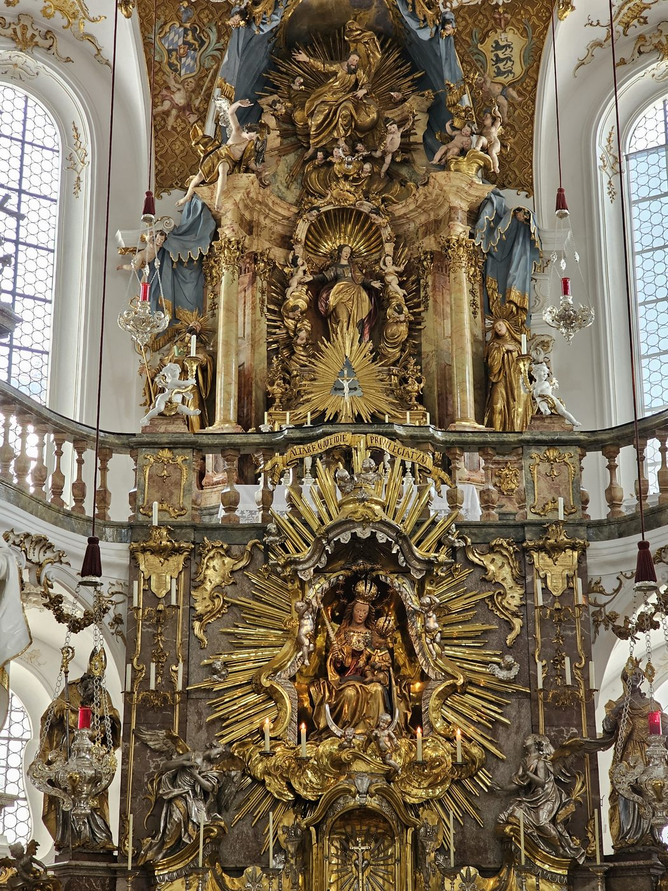
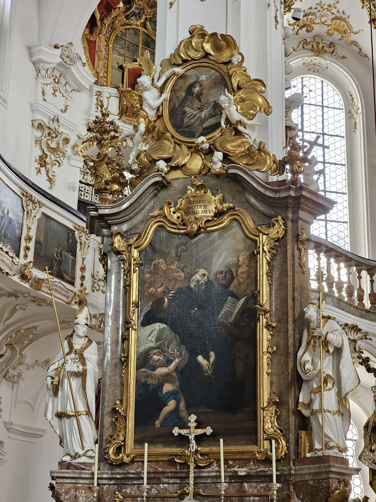
Satu altar sampingnya diberi nama S. RASSO — santo Bavaria yang dihormati di kawasan Ammersee ini. Lukisannya menggambarkan seorang ksatria berbaju zirah, bukan biarawan.
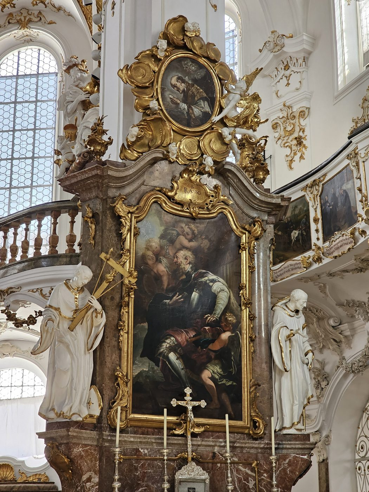
Dan di lengkung dinding, dalam bingkai rokoko putih-emas, dua kata yang sudah muncul tiga kali hari ini — di peta gerbang, di papan sejarah, dan sekarang di dalam gerejanya sendiri, kali ini dalam bahasa Latin: MONS SANCTUS. Gunung Suci.
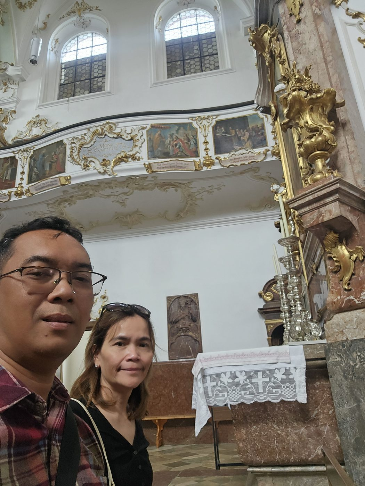
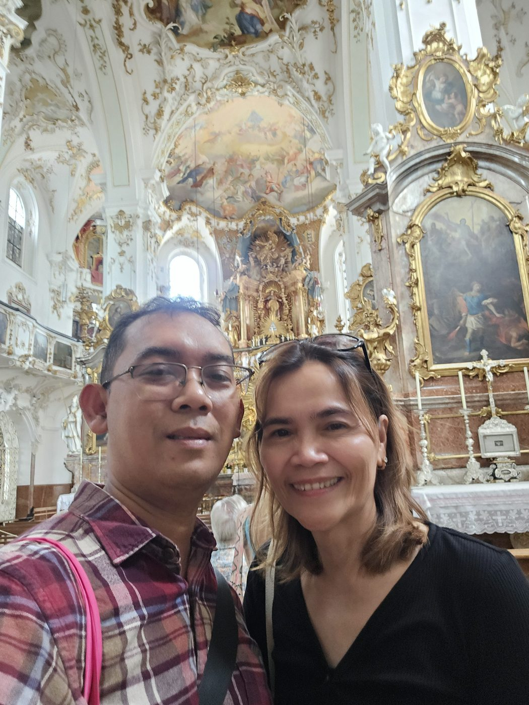
Kapel Duka, dan sebuah nama yang tidak disangka
Lingkaran yang baru ketahuan setelah semuanya dibaca
Di sisi gereja ada pintu berbingkai kayu gelap. Di atasnya, hiasan rokoko putih-emas dengan tulisan huruf Fraktur: Schmerzhafte Kapelle — Kapel Duka.
Namanya langsung terjelaskan begitu masuk. Altarnya bukan Maria bermahkota yang berseri seperti di luar, tapi Pietà — Maria memangku jenazah Yesus. Di dindingnya salib hitam polos tanpa hiasan apa pun. Setelah ruang utama yang penuh emas tadi, kapel ini terasa seperti seseorang tiba-tiba menurunkan suara.
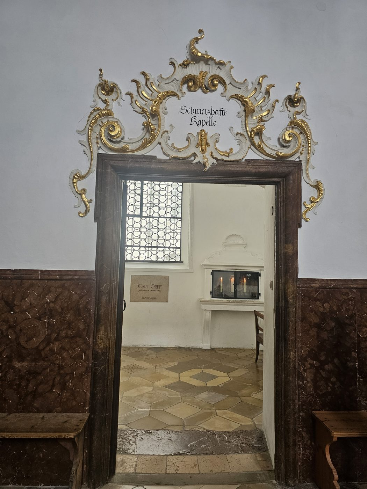
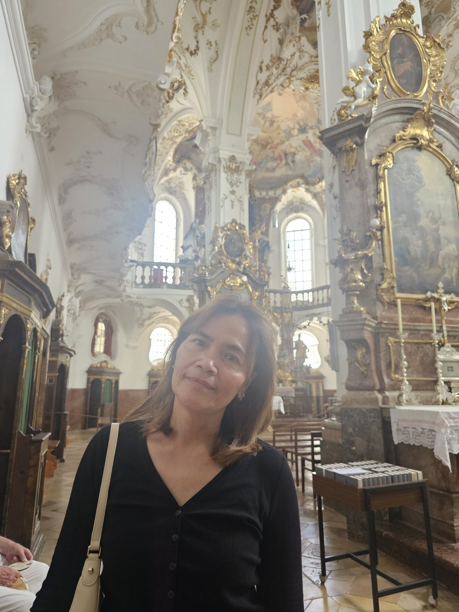
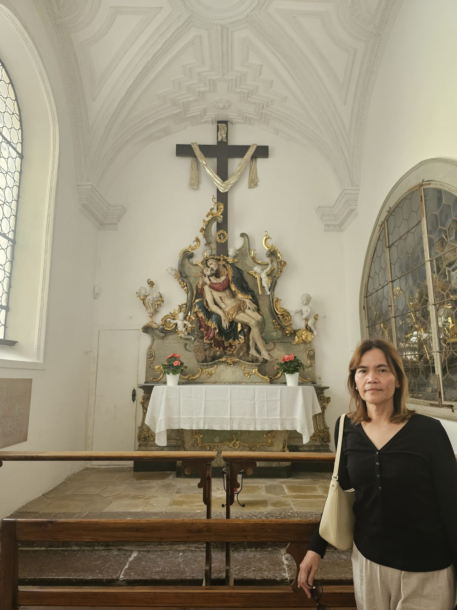
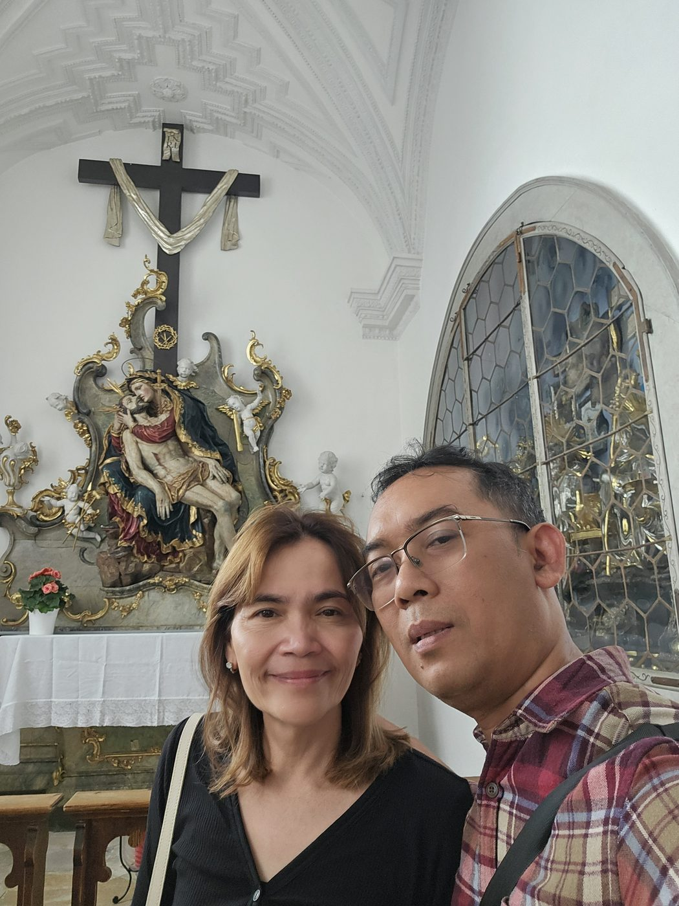
Langit-langitnya pun beda: putih polos berusuk, tanpa satu pun lukisan.
Lalu di dinding kapel itu, di samping jendela berkisi bundar, ada lempeng batu polos. Tidak ada emas, tidak ada malaikat, tidak ada bingkai. Isinya cuma:
Carl Orff adalah komponis Carmina Burana — ya, yang itu: paduan suara menggelegar pembuka O Fortuna, yang dipakai di entah berapa ratus film, iklan, dan tayangan olahraga sampai orang hafal tanpa tahu judulnya.
Dan di sinilah lingkarannya menutup, dan baru ketahuan setelah papan-papan hari ini dibaca semua.
Carmina Burana artinya "Nyanyian dari Beuern". Musiknya digubah dari kumpulan sajak abad pertengahan dalam sebuah naskah yang ditemukan di Biara Benediktbeuern.
Dan Benediktbeuern adalah biara yang namanya kami baca siang tadi, di papan kecil di jalan naik, dalam piagam abad ke-12 tentang bukit ini: Perhtoldus comes, Vogt des Klosters Benediktbeuern — bangsawan Berthold, pelindung Biara Benediktbeuern, yang menukar hutan warisannya dengan lahan biara itu di Erlingin, "yang bersebelahan dengan bentengnya, Burg Anedehs".
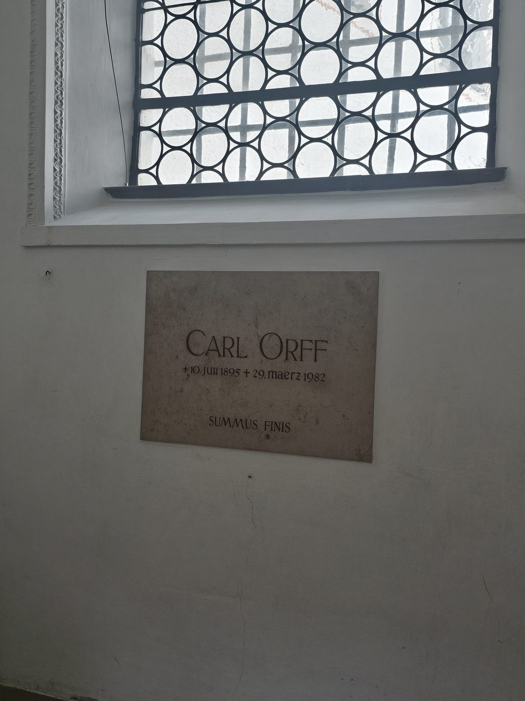
Sebelum keluar, dua hal terakhir yang menutup lingkaran kecil. Pertama, bilik pengakuan berlapis kayu bermarketri dengan tirai hijau — jadi baris Beichtgelegenheit di papan jadwal tadi memang punya alamat fisik. Kedua, dari ujung ruangan, deretan pengunjung lain berdiri persis seperti kami: mendongak, tidak bicara.
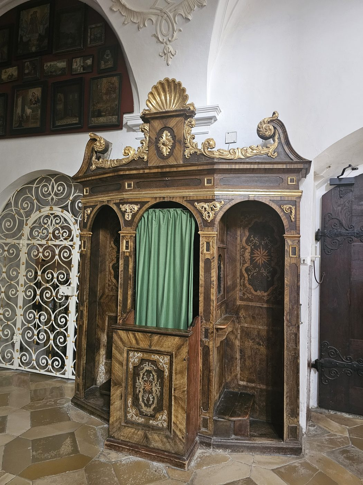
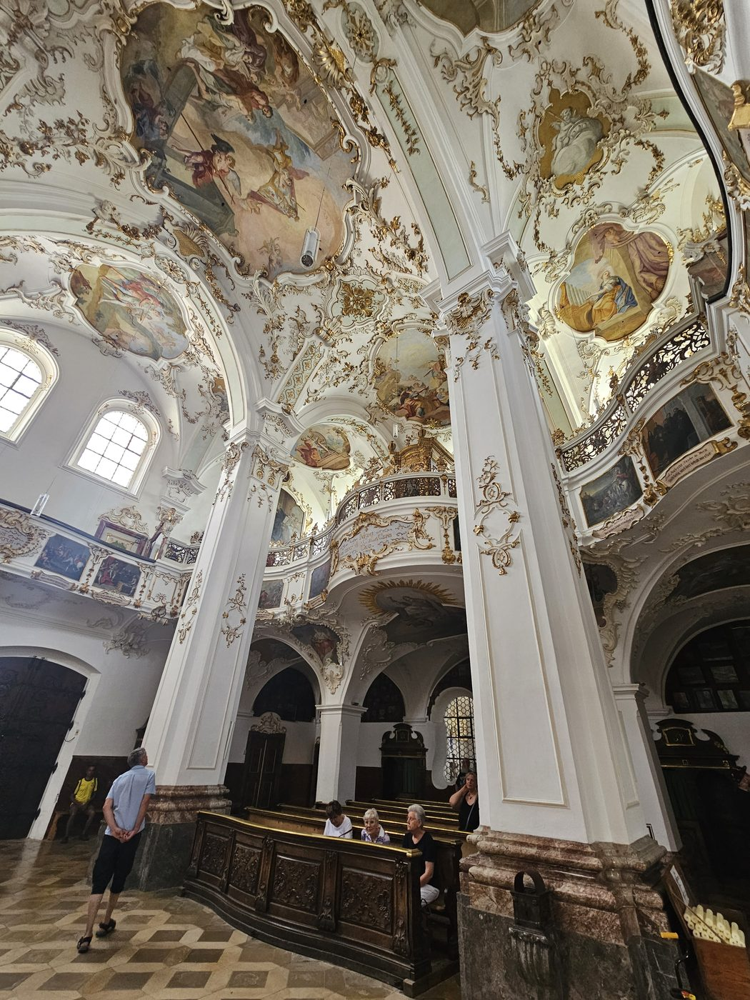
Menginap jauh dari Munich, dan itu disengaja
Malam yang seluruhnya diatur oleh jadwal besok pagi
Tujuan hari ini memang Munich. Tapi yang dicari bukan penginapan di tengah kotanya, melainkan di kota kecil dekat bandara — dan itu keputusan sadar, bukan kepepet.
Alasannya ada di jadwal besok: penerbangan ke London Heathrow jam 07.30, dan sebelum itu mobil sewaan harus dikembalikan dulu. Kalau menginap di pusat kota, pagi buta itu berarti berkemas, keluar, menyetir 30-an kilometer ke bandara, mencari tempat pengembalian, mengurusnya, baru lapor. Dengan penerbangan sepagi itu, jaraknya bukan cuma soal waktu tempuh — dia soal berapa banyak hal yang bisa salah.
Jadi malam ini semua dipindahkan lebih dekat: tidur dekat bandara, dan cari makan yang cukup jalan kaki dari penginapan.
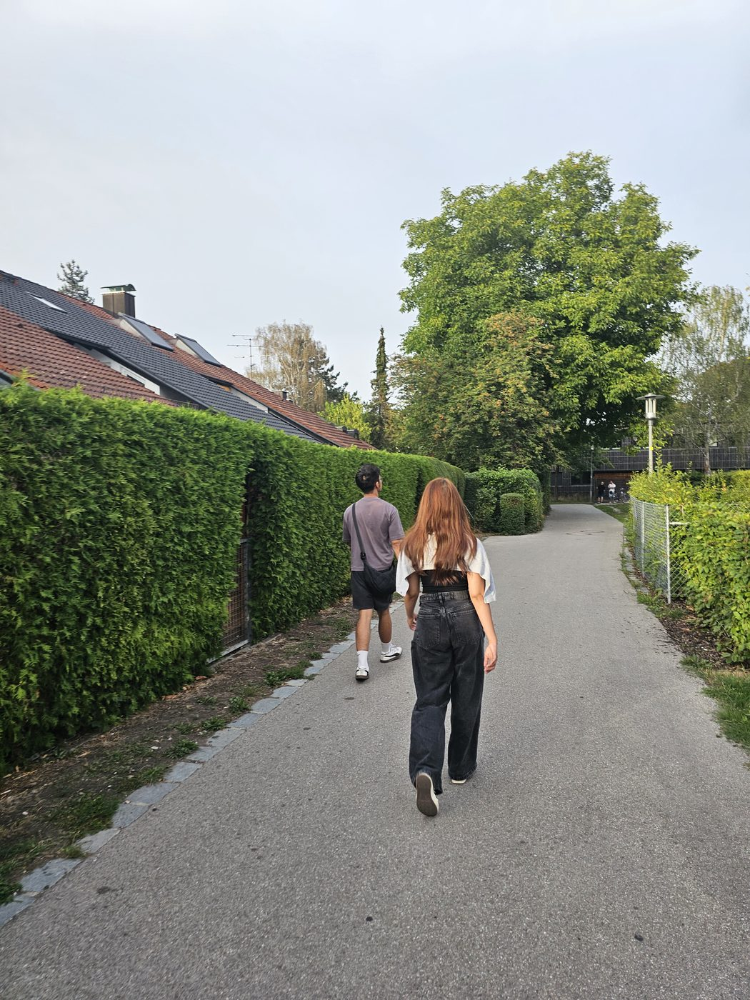
Lima menit jalan kaki, dan permukiman itu berubah jadi pusat kota kecil: lantai batu granit yang luas, menara gereja krem dengan jam bertangan emas, deretan toko dengan tenda-tenda merah dan oranye, dan orang-orang duduk di kursi luar.
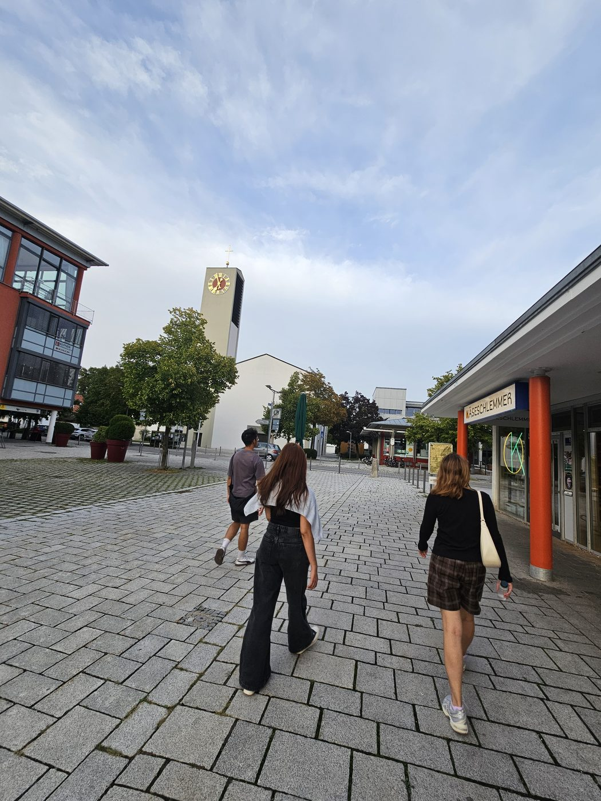
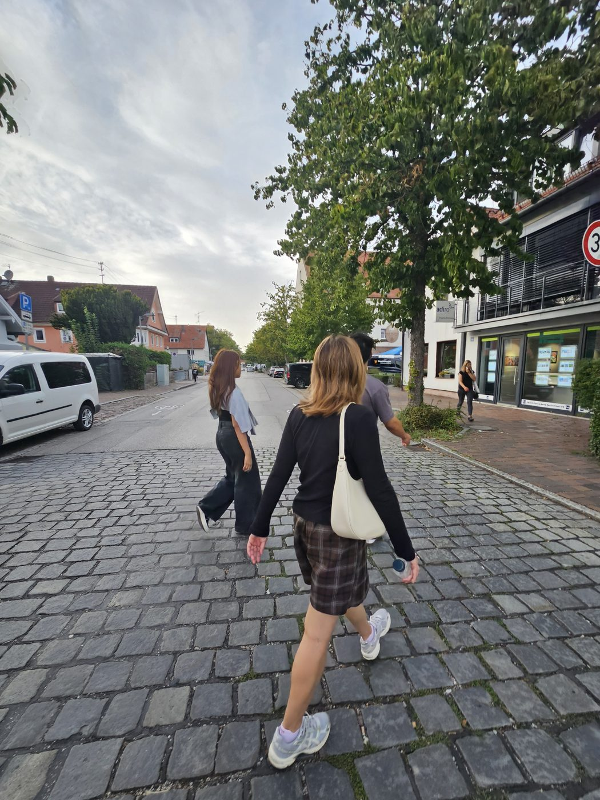
Bukan Marienplatz, bukan Getreidegasse. Kota kecil biasa yang penduduknya sedang menghabiskan sore.
Makan malamnya sendiri tidak ada fotonya — yang tercatat cuma jalan berangkat dan jalan pulangnya. Jam delapan lewat, langit sudah biru gelap, dan alun-alun yang tadi terang berubah jadi deretan lampu hangat: kursi-kursi luar penuh, dan di tengahnya ada arena main anak dari beton berlubang bundar hijau, jenis yang dipanjat sambil menunggu orang tuanya selesai ngobrol.
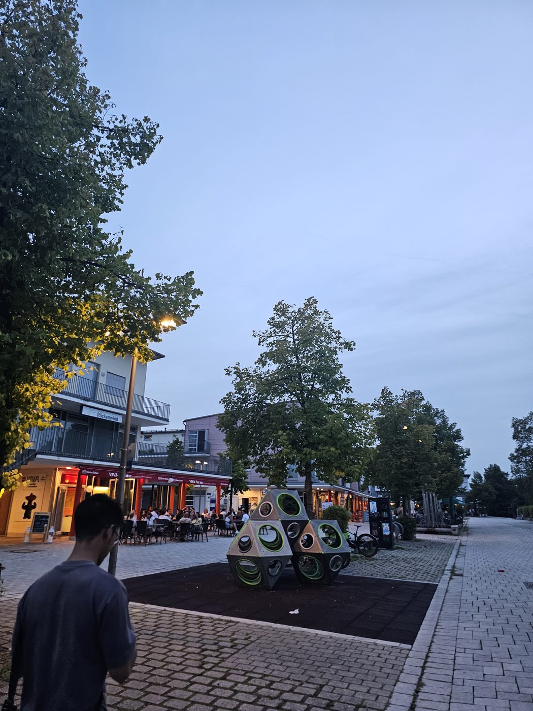
Dan di jalan pulang, satu pemandangan yang menutup hari ini dengan rapi. Di tepi tempat parkir berdiri deretan tong daur ulang kaca — hijau, cokelat, putih, dipisah per warna botol — plus kotak besar Bayerisches Rotes Kreuz untuk sumbangan baju dan sepatu.
Pagi ini hari dimulai dengan mesin yang membeli kembali botol plastik kami seharga dua puluh lima sen sebiji. Malamnya ditutup dengan tong yang memisahkan botol kaca menurut warnanya. Di antara keduanya kami melintasi satu perbatasan negara. Kebiasaannya ternyata sama saja.
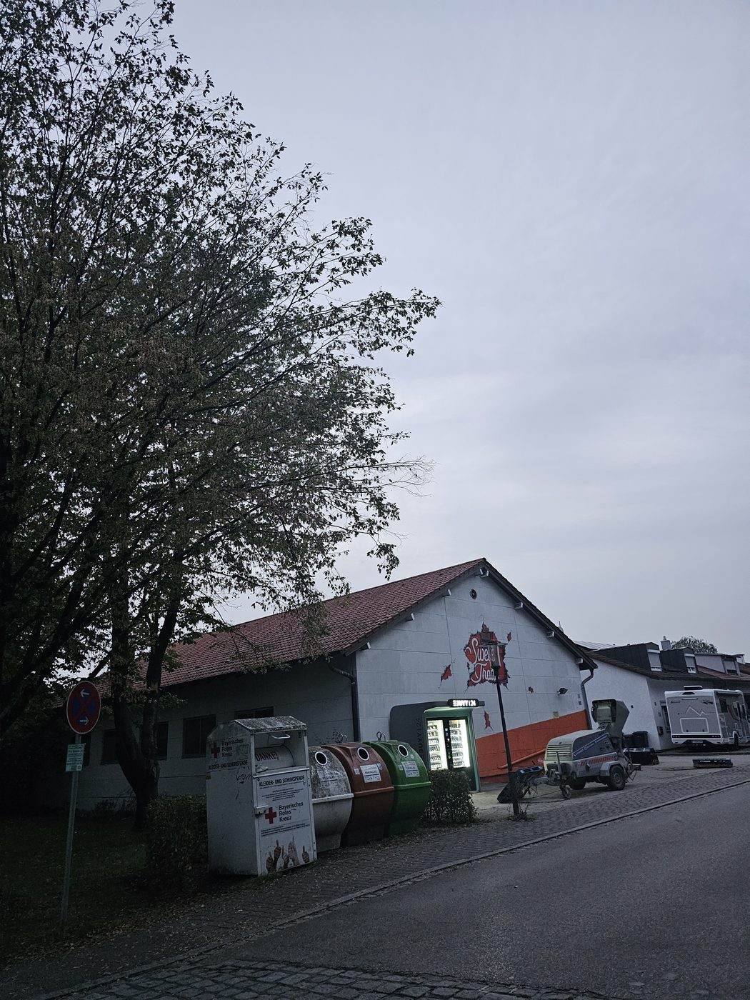
Isi diesel terakhir
Malam ini, bukan besok pagi — dan itu ada alasannya
Setelah balik ke penginapan, mobilnya diambil lagi untuk satu urusan terakhir: mengisi diesel. Jam setengah sembilan malam, di sebuah SPBU Shell yang lampunya sudah menyala melawan langit biru tua.
Kenapa malam ini dan bukan besok pagi? Karena besok pagi tidak ada waktunya. Mobil sewaan umumnya harus dikembalikan dengan tangki penuh, dan mencari SPBU jam setengah enam pagi sambil mengejar penerbangan jam 07.30 adalah cara paling mudah merusak hari. Jadi diisi sekarang, selagi masih santai.
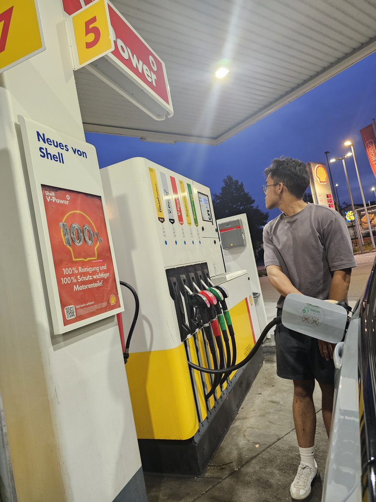
Dan papan pompanya, seperti biasa, dipotret sebelum ditutup:
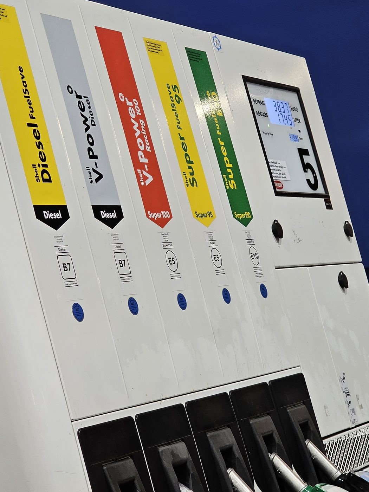
Sepuluh hari, tiga kali isi diesel
Rekapnya, sekarang setelah semua angkanya terbaca
Ini pengisian ketiga dan terakhir untuk mobil ini. Ketiga papan pompanya sempat dipotret, dan ketiganya sudah dihitung ulang — liter dikali harga per liter harus sama dengan totalnya, kalau tidak, angkanya tidak dipakai.
Kenapa CZK-nya tidak ikut dijumlahkan? Karena kurs koruna ke euro hari itu tidak pernah kami catat. Menjumlahkannya berarti memakai kurs hari ini untuk transaksi lima hari lalu, dan hasilnya bukan angka yang benar — cuma angka yang kelihatan rapi. Jadi liternya digabung, uangnya tidak.
Satu perbandingan yang jadi kelihatan setelah tiga papan ini disandingkan: diesel di Austria €2,037 per liter, di Jerman €2,199. Beda 16 sen per liter — sekitar delapan persen, untuk bahan bakar yang sama, di dua negara yang perbatasannya kami lewati pagi ini tanpa berhenti sama sekali.
Lalu, menjelang tidur, kabar buruk
Penerbangan besok pagi dibatalkan
Tangki sudah penuh, tas sudah dikemas, alarm sudah disetel pagi buta. Lalu masuk pemberitahuan dari British Airways: penerbangan besok pagi dibatalkan.
Yang batal itu BA941, Munich 07.30 tiba Heathrow 08.40 — penerbangan yang seluruh malam ini disusun untuk mengejarnya. Penginapan sengaja dipilih dekat bandara karena dia. Diesel sengaja diisi malam ini karena dia.
Jadi rencana tidur berubah jadi rencana lain: mengurus penjadwalan ulang sampai lewat tengah malam.
Berempat, jadi tiga rute berbeda
Konsekuensi yang tidak kelihatan waktu memesan tiket
Di sinilah satu keputusan lama menagih harganya. Tiketnya dipesan sendiri-sendiri, bukan dalam satu pemesanan. Waktu semuanya lancar, itu tidak terasa apa-apa. Waktu penerbangannya dibatalkan, artinya sistemnya mencarikan pengganti untuk tiap orang secara terpisah — dan yang tersedia untuk tiap orang beda-beda.
Hasilnya: berempat berangkat dari Munich ke London lewat tiga rute berbeda, dan semuanya sore hari.
Bandingkan dua baris paling atas dan kelihatan apa yang sebenarnya hilang: rencananya menginjak London jam setengah sembilan pagi, kenyataannya jam delapan malam. Satu hari penuh di London hangus — bukan tertunda, hilang.
Pelajarannya jelas dan agak mahal: kalau berangkat rombongan, pesan dalam satu kode pemesanan. Bukan karena lebih murah — sering justru tidak — tapi karena kalau sesuatu batal, maskapai mencarikan pengganti untuk satu rombongan, bukan untuk empat orang asing yang kebetulan searah.
Yang ternyata bisa diklaim
Dan ini bagian yang paling layak dicatat dari seluruh hari ini
Kabar baiknya — dan ini yang banyak orang Indonesia tidak tahu — pembatalan seperti ini ada kompensasinya, dan diatur undang-undang. Bukan belas kasihan maskapai.
Tapi sebelum mengklaim apa pun, satu hal harus dijernihkan dulu, karena dia menentukan ke pos mana klaimnya diajukan: yang dilakukan maskapai adalah pembatalan, sedangkan yang kami alami adalah penundaan. Dua-duanya benar, dan dua aturan menilainya dari sisi yang berbeda — hukum Eropa melihat pembatalannya, polis asuransi melihat akibatnya.
Kalau penerbanganmu dibatalkan di Eropa
- Ada aturannya: EU261. Peraturan Uni Eropa nomor 261/2004 mengatur hak penumpang saat penerbangan dibatalkan atau sangat terlambat. Dia berlaku untuk semua penerbangan yang berangkat dari bandara di Uni Eropa, maskapai apa pun — termasuk penerbangan kami yang berangkat dari Munich.
- Besarannya menurut jarak. Untuk rute sampai 1.500 km, kompensasinya €250 per orang. Munich–London sekitar 950 km, jadi masuk kelompok ini. Rute yang lebih jauh dapat lebih besar.
- Ini kompensasi, bukan pengembalian uang tiket. Dia dibayar di atas hak atas penerbangan pengganti atau uang tiket kembali. Jadi harga tiketmu tidak menentukan besarannya — dan di kasus kami, tiketnya sendiri cuma sekitar dua setengah sampai tiga juta rupiah per orang. Kompensasinya lebih besar daripada tiketnya.
- Telatnya berpengaruh. Kalau penerbangan pengganti membuatmu tiba hanya sedikit lebih lambat dari jadwal semula, kompensasinya bisa dipotong setengah. Kami tiba lebih dari sebelas jam lebih lambat, jadi tidak kena potongan itu.
- Ada pengecualiannya. Kalau pembatalannya karena hal di luar kendali maskapai — cuaca ekstrem, penutupan wilayah udara, mogok petugas navigasi udara — kompensasinya gugur. Masalah teknis pesawat dan mogok karyawan maskapai sendiri umumnya tidak masuk pengecualian ini.
- Siapkan rekening Eropa. Ini kejutan buat kami. Waktu klaim langsung ke maskapainya, formulirnya minta nomor rekening bank di Eropa — pilihan rekening Indonesia tidak ada sama sekali. Untung ada Justin yang punya, jadi dipakai rekening dia. Kalau berangkat sendirian tanpa akses rekening Eropa, ini bisa jadi jalan buntu yang sepele tapi nyata.
- Ada jasa pihak ketiga. Beberapa layanan (misalnya refly.org) mau mengurus klaimnya untukmu. Praktis kalau tidak mau berurusan sendiri, tapi komisinya dipotong dari hasil klaim — jadi yang sampai ke kantongmu lebih kecil daripada klaim langsung.
- Asuransi perjalanan itu jalur terpisah — tapi jangan salah pos. Kami mengambil asuransi sebelum berangkat (Zurich, polis keluarga 18 hari, premi sekitar Rp 1,8 juta). Waktu tabel manfaatnya dibuka, godaannya besar: ada pos bernama “Pembatalan & Perubahan Perjalanan” berlimit Rp 65 juta. Penerbangan kami dibatalkan, jadi ke situ dong? Ternyata tidak. Definisinya berbunyi “jika Anda terpaksa mengatur ulang atau membatalkan Perjalanan sebelum meninggalkan rumah”. Kami sudah di Eropa, hari kesepuluh. Pos itu gugur.
- Yang cocok justru pos “Penundaan Perjalanan”. Bentuknya bukan satu limit besar, tapi santunan Rp 1 juta per 4 jam, maksimum Rp 4 juta per orang. Telat berangkat kami 9 jam 30 menit, telat tiba 11 jam 15 menit — dihitung dari mana pun, dua-duanya jatuh di dua periode penuh, jadi perkiraannya Rp 2 juta per orang. Untuk mentok di Rp 4 juta perlu telat 16 jam. Jadi plafon di tabel itu bukan yang kamu terima; yang menentukan adalah berapa lama telatnya.
- Baca definisi tiap pos, jangan cuma namanya. Tiga pos lain yang kedengarannya cocok juga gugur begitu definisinya dibaca: Pengurangan Perjalanan syaratnya pulang ke rumah lebih awal; Gangguan Perjalanan syaratnya perjalanan terhenti minimal 24 jam (kami cuma 11); Pengalihan Penerbangan syaratnya karena cuaca buruk. Sebaliknya, satu pos yang tidak terpikir malah mungkin bisa: “Acara Khusus” — kalau ada tiket pertunjukan, tur, atau reservasi yang hangus gara-gara kamu datang terlambat.
- Sebut nama posnya, bukan nomornya. Di dokumen kami, penomoran di Sertifikat Polis dan di Ketentuan Polis ternyata selisih satu — “Penundaan Perjalanan” bernomor 22 di dokumen yang satu, 21 di dokumen yang lain. Kalau kamu mengutip nomor, klaimmu bisa diarahkan ke pos yang salah.
- Bisa dapat dari maskapai dan asuransi? Kemungkinannya lebih besar kalau posnya berbentuk santunan — jumlah tetap per satuan waktu, seperti Penundaan Perjalanan tadi — dibanding pos yang sifatnya mengganti biaya nyata, yang lazim dipotong sebesar apa yang sudah kamu terima dari pihak lain. Tetap cek Ketentuan Polis lengkapnya, bukan ringkasan di sertifikat: yang mengikat itu naskah panjangnya.
- Simpan semuanya. Surat pemberitahuan pembatalan, kode pemesanan, boarding pass lama dan baru, dan jam tiba yang sebenarnya. Itu semua bukti, dan batas waktu mengajukan klaim bisa sampai beberapa tahun — jadi tidak apa-apa diurus setelah pulang, dengan kepala dingin.
Catatan: ini pengalaman kami, bukan nasihat hukum atau nasihat asuransi. Angka rupiah di atas adalah pembacaan kami atas polis kami sendiri — punyamu bisa beda plan, beda limit, beda definisi. Sebelum mengajukan, baca Ketentuan Polis lengkapmu dan ketentuan resmi EU261.
Jadi begitulah Hari 10 berakhir. Dimulai dengan mesin yang membeli kembali botol plastik kami seharga dua puluh lima sen sebiji, dan ditutup dengan pelajaran bahwa di benua ini penumpang pesawat pun punya harga yang dilindungi undang-undang.
Ada yang pernah mengalami hal serupa? Kalau kamu punya pengalaman klaim ke maskapai atau asuransi setelah penerbangan dibatalkan, ceritanya ditunggu — kolom komentar ada di bawah tiap foto di halaman ini, cukup isi nama.
Pfand: uang yang gampang ditinggalkan
- Simpan botol dan kaleng kosongmu. Di Austria tiap botol plastik sekali pakai dan kaleng minuman mengandung jaminan €0,25 yang sudah kamu bayar di depan. Membuangnya ke tempat sampah sama dengan membuang uang.
- Mesinnya ada di pintu masuk supermarket, bertuliskan Leergut Rückgabe atau bergambar botol. Masukkan satu per satu, tekan tombol, ambil vouchernya.
- Vouchernya bukan uang tunai — dia potongan belanja, dipakai di kasir toko yang sama. Jadi tukar botolnya sebelum belanja, bukan sesudah.
- Botolnya jangan diremas. Mesin perlu membaca kode batang dan mengenali bentuknya; botol penyok sering ditolak.
- Ada dua sistem berbeda. Yang baru untuk wadah sekali pakai; yang lama untuk botol kaca pakai ulang dan petinya — peti kosong saja bernilai €3. Jangan bingung kalau daftarnya panjang.
- Kalau besok pagi terbang, tidurlah dekat bandara dan isi bensin malam ini. Mobil sewaan biasanya harus balik dengan tangki penuh. Mencari SPBU jam setengah enam pagi sambil mengejar penerbangan adalah cara termudah merusak hari.
- Gerejanya gratis dan masih dipakai. Tidak ada loket, tidak ada tiket. Tapi ini gereja paroki yang hidup — lihat papan jadwal di serambinya, dan kalau kebetulan ada misa, masuklah pelan atau tunggu selesai.
- Sisihkan waktu untuk belok. Andechs tidak ada di rencana kami sampai seseorang mengusulkannya di tengah jalan. Kalau menyewa mobil, kemampuan berbelok mendadak itu justru barang yang kamu bayar.